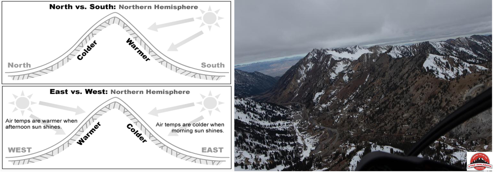

Introduction: GeoSMART Hackweek Snow Extrapolation Project
Contents

Introduction: GeoSMART Hackweek Snow Extrapolation Project#

Background#
Snowpack, measured in the form of snow-water equivalent (SWE) is a critical component of the water supply in mountainous regions and the hydro-connected downstream environments. SWE represents the quantity of liquid water within a snowpack and is one of the key parameters in forecasting snowmelt runoff and seasonal water supplies. Characterizing seasonal SWE dynamics spanning accumulation, peak SWE, and snowmelt enhances estimates of streamflow flow timing, duration, and intensity that impacts both human and ecological processes.
The value of the annual snowpack in the western U.S. can approach the order of a trillion U.S. dollars due to the resulting melt water supporting agriculture, residential, and commercial purposes. In spite of the economic and environmental forces, accurate estimation of SWE on a broad scale remains a longstanding challenge.
Recognizing the value of widespread SWE estimates and mountainous basin hydroclimate, the U.S. Department of Agriculture (USDA) Natural Resource Conservation Service (NRCS) has installed over 900 automated snow telemetry (SNOTEL) monitoring stations throughout the western U.S since the 1980s, capturing snow depth driven by accumulation, melting, temperature, precipitation, and directional wind speed at each location. Advancements in Light Detection and Ranging (LiDAR) on aircraft and uncrewed aerial vehicles (UAV) complement existing SWE monitoring networks and routine snow course surveys, creating a rich dataset of catchment scale snow dynamics.
Research Gap#
SNOTEL and LiDAR provide critical snowpack information, however, the sparsity of in situ monitoring stations, the under-representation of SWE measurements at high elevation and rugged terrain, and the expense of snow-on LiDAR observations confound accurate large-scale and temporally continuous snow estimates.
Complex terrain controls snow accumulation and ablation process, impacting the accurate scaling of SWE estimates from in situ point measurements to the catchment and greater scales. The installation of snow monitoring stations was to develop statistical relationships between a location in a catchment (e.g., high elevation just below the treeline on north-facing slopes) and streamflow - snow monitoring stations are not intended to be representative of catchment snowpack.
Physically-based modeling techniques can demonstrate high accuracy in estimating catchment scale SWE dynamics, capturing the coupled energy-balance interactions between solar radiation, wind, precipitation, albedo, and other inputs.
A growing record and availability of remote sensing data products has the potetential reduce catchment SWE error.
While physically-based and remote sensing supported models demonstrate the potential for large-scale SWE estimation, limitations with spatial heterogeneity (e.g., highly variable topography and microclimates), climate (e.g., maritime, intermountain, and continental snowpack), and data limitations (e.g., remote sensing snowpack properties below cloud cover or heavy vegetation) create challenging circumstances for a national-scale SWE model.

Research Motivation#
Machine learning (ML) demonstrates the potential to complement existing snow modeling methods with broad and cost effective application. Improvements in computational power, open-source access, and community modeling present opportunities to model complex hydrological systems, leffectively identifying key topographic and physical feature relationships to snow properties without the need for prior assumption or mechanistic parameterization.
Examples of machine learning applied to snow estimation include the modeling of large basins at a low resolution, preferential flow from snow runoff, and evaluating the accuracy of ML methods across heterogeneous landscapes and timescales. Complementing basin SWE extrapolation, ML techniques demonstrate the ability to function as a regional bias correction tool from daily temporal and national spatial scale products such as the Snow Data Assimilation System (SNODAS).
National Snow Model#
The NSM introduces a novel two-step ML framework which combines Gradient Boosted Decision Trees (GBDT) with feature optimization for the selection of training features to inform regionally optimized Deep Learning artificial neural network (ANN). The prototype model estimates 20,000 km2 of SWE at a 1-km spatial resolution over the western U.S., with near-full coverage of the Sierra Nevada mountains ad the Colorado Rockies. In its current form, the NSM uses the following data inputs:
Snow monotoring station data (SNOTEL and California Data Exchange Center (CDEC) snow observations)
Lidar-derived terrain features
Geospatial information
Temporal features
The first year of model development identified a need to improve the prediction capabilities of the model(s) covering the Sierra Nevada mountains, and will be the focus of the GeoSMART Hackweek.
Tutorial Overview/Project Scope#
The goal of the project to improve the capability of machine learning algorithms ability to extrapolate snow-water-equivalent estimates in the Sierra Nevada mountains in California. The project will use three regions of the National Snow Model (NSM):
Northern Sierras (N_Sierras)
Southern Sierras w/elevations > 2,500m (S_Sierras_High)
Southern Sierras w/elevations < 2,500m (S_Sierras_Low)
Using these three regions of the NSM, the tutorial will cover the following components